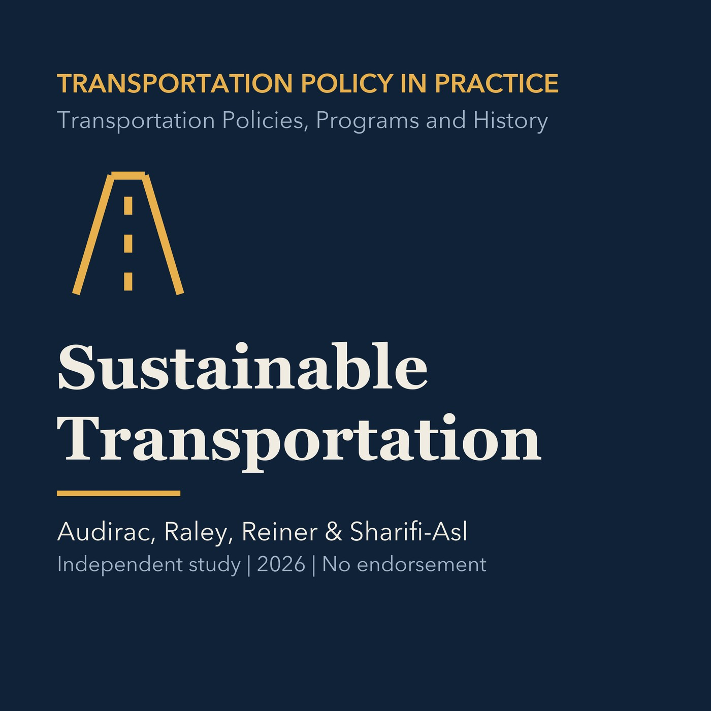

EPISODE 09
Sustainable Transportation
Uses environmental, economic, and social indicators to define sustainable transportation and examine a Torrance active-transportation case.

- Stable GUID
32cba5b5-fc04-5c70-811c-84ae737b0b65- Release
- transportation-policies-programs-history-v2026.2
- SHA-256
a71cf7e3abbc7ff7ab921d0fe399b2c0ee1c817c3ac9ca9bae9ea35251ea660e